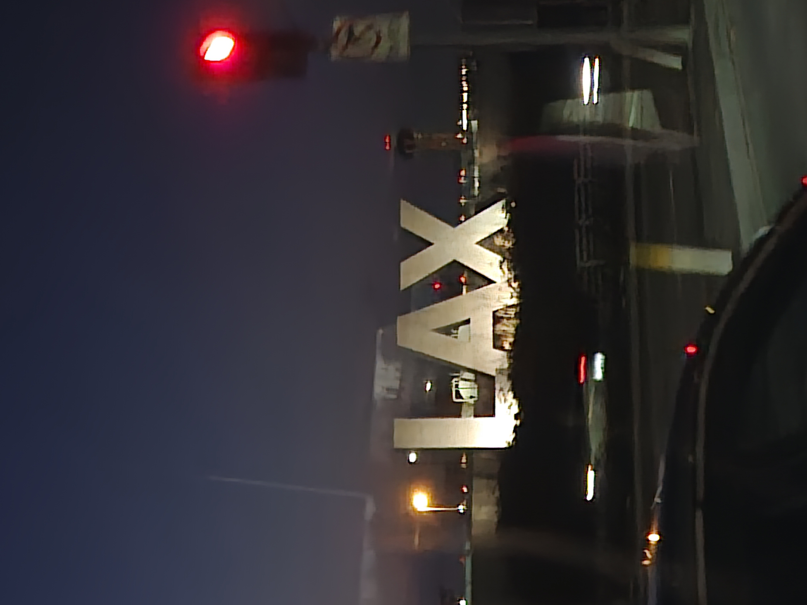
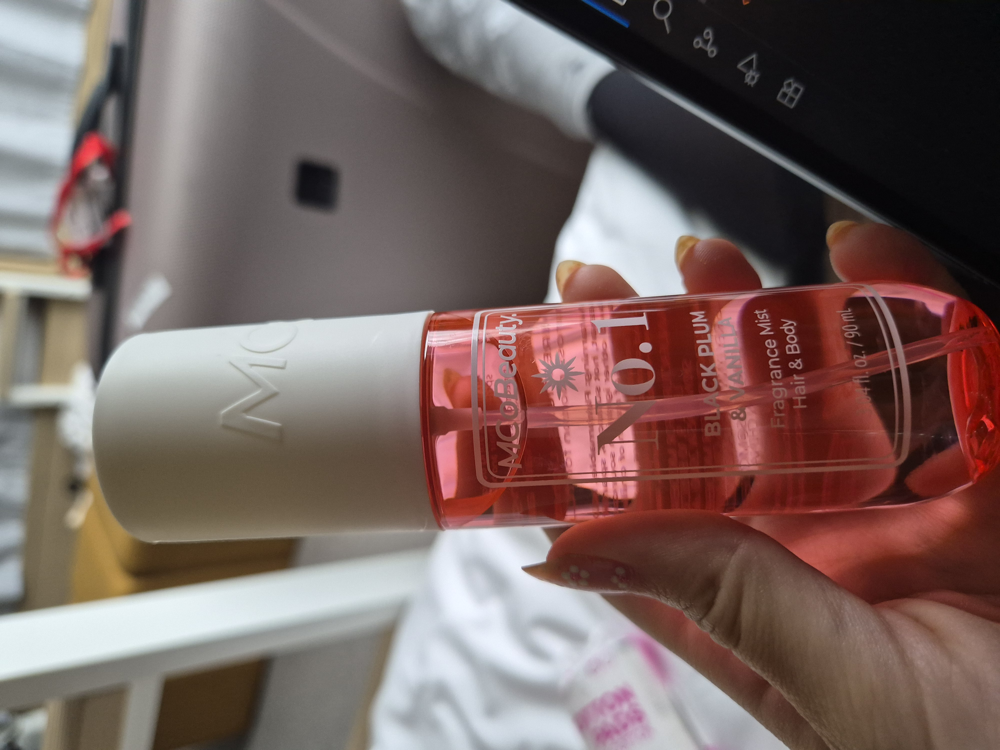
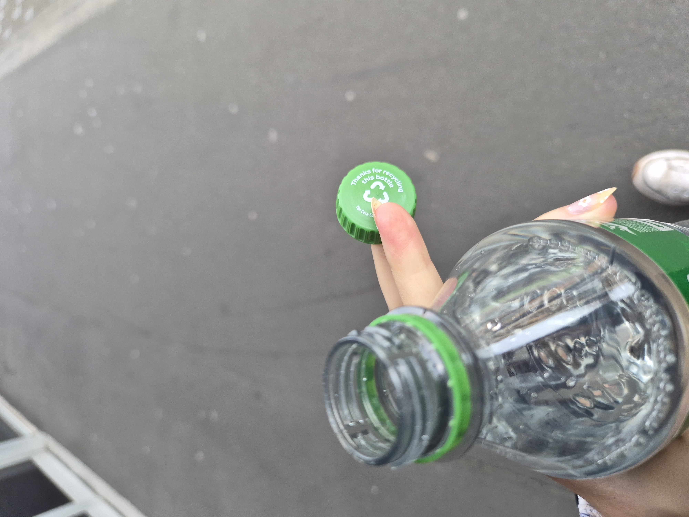

Hello. Pretty seamless journey but a looooong one. My first flight left very early from Gatwick to Los Angeles. I had once planned to use my 10hr layover in LA to go to the beach, but sensibility got the best of me, and I went to a hotel instead to lie down. Unfortunately, I wasn't very tired so I ended up watching alot of American TV. My flight was late at night from LAX to Sydney, I watched "Bring Her Back" which was very good very spooky. Very fun to watch a spooky move on a plane, I think it makes the time go quicker. I got to Sydney in the morning and had a few hours before the last flight to Christchurch! The flight was only 3 hours, but they had TVs on board and served a meal. I almost to watched "The Substance" but I was sat near a child, so I thought better.
One of the problems with New Zealand is the limited public transport service, so I got an uber from the airport. The lovely uber man told me I should get a boyfriend and then I wouldn't have to worry about paying for things - I agree! I put my stuff down at the hostel at around 6pm and went straight back out to the shops. I had greatly missed Chemist Warehouse since my last time in nz so that was the first place I headed. Then I went to the supermarket Pack n Save and got some food for dinner. I apologise I haven't taken many pictures so I've put in some images so you can feel like you're there. I slept well.
I got up at a reasonable hour and had some gluten free coco pops. I then made some calls as I needed to sort out phone and bank stuff which I had tried to do the night before and messed up. I then went out for most of the morning to do more shopping! I got some trousers and a plug adapter, and this gorgeous Sol de Janeiro dupe from chemist warehouse. Along the way I came across a gluten free bakery and had the veggie roll. The pastry was not like real pastry, but I don't think that was the point. I then made my way out of the city centre to buy a car.
I did not know they do not come with you on the test drive; I had no idea where I was driving and how many people steal cars this way? Probably a good thing as it took me a while to get used to the brakes on an automatic and the drive was embarrassingly jumpy for a while. Car was good, I now have a car! In celebration I bought a sprite, which I had forgotten have removable caps here. I was surprisingly annoyed at this as I had to focus very hard on not dropping the lid as I drank the sprite.
{kind=link}
{kind=link}